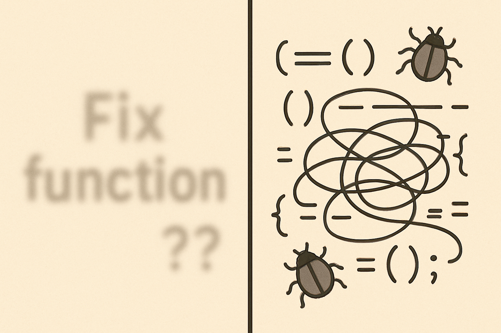

The Vague Plea vs. The Laser-Guided Command 🎯
The Pain: "Just Fix It!"
You: "Cursor, fix this broken processOrder function."
// Messy, uncommented code snippet here
void processOrder(Order order, User user, PaymentDetails details) {
if(user.isVal() && order.itemCount() > 0){
// ... lots of nested logic ...
paymentService.charge(details.getCard(), order.getTotal());
}
}Cursor: (Generates something wild or useless) "Is this what you meant? 🤷"
Why it hurts: Wasted time, frustration, loss of faith in AI.
The Cursor Cure: Precision is Power!

Pro Tip: You can also drag and drop files directly into the chat to add context! 🎯
The Winning Formula:
[@Target(s)] + [Clear Goal] + [Step-by-Step Specs/Constraints] + [Maybe Exclusions?]
Example:
@OrderService.java please refactor the `processOrder` method.
1. Improve readability: use clearer variable names, reduce nesting by 1 level.
2. Enhance error handling for `PaymentException`: log it & re-throw `OrderProcessingException`.
3. Ensure SRP. Don't touch the logging framework.Cursor's Superpower: The @ Symbol!
@file_name.ext: "Look HERE!"@folder_name: "Consider ALL THIS!"@symbolName: "Zoom in on THIS function/class!"@weburl.com: "Check this StackOverflow answer!"
Key: You're the senior dev guiding your AI intern. Be specific!
"Build Me a Spaceship!" vs. "Let's Design the Cockpit First." 🚀
The Pain: The "Boil the Ocean" Request

You: "Cursor, generate the entire microservice for auth, payments, and notifications. And make it snappy."
Cursor: (Spits out a novel, buggy code... or times out).
Later: "That amazing AI function from yesterday... where did it go? What did I even ask?"
The Cursor Cures: Think Small, Commit Often!

- You're the Architect, Cursor's the Builder (for components):
Developer: Defines architecture, interfaces.
Cursor: "Implement
@IPaymentGateway.java createPayPalPaymentGateway()with methodsprocessPaymentandrefundPayment." - One Bite at a Time (Sequential & Verify): Ask for smaller chunks.
Crucial: Verify each piece! "Cursor,
/testgenerate JUnit5 tests for@calculateDiscount."[Placeholder: Screencast of using /test for a small function] - Your AI Safety Net:
git commitEarly & Often!git commit -m "WIP: Cursor drafted PaymentProcessor"Why? Easy rollback, clear history, no "What did AI change?!" moments.